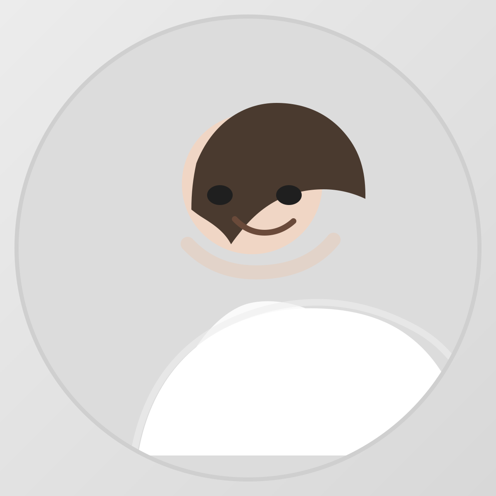

Артём Бандин

Код. Маркетинг. Медицина.
Собираю понятные системы для клиник и продуктов.
Работаю на стыке аналитики, автоматизации, продукта и маркетинга. Люблю вещи, которые можно измерить, проверить и улучшить.
Что делаю
- Rang.ai — автоматизация, аналитика, продуктовые эксперименты.
- Лёгкая стоматология — маркетинг, BI, онлайн-запись, отзывы.
- OpenClaw — скрипты, skills, workflows, напоминания, счета.
Что значимого сделал
- Собираю процессы, где маркетинг не оторван от цифр.
- Делаю инструменты, которые снимают ручную рутину.
- Пишу про AI, контекст, код, метрики и практику.
Избранные посты
LLM и большой контекст — почему нейронки полезны там, где человеку уже не хватает рабочей памяти.
Навык пробовать самому руками — про привычку проверять новое самому, а не смотреть со стороны.
Размер контекста мозга человека — про границы внимания и зачем тут LLM.
Контакты